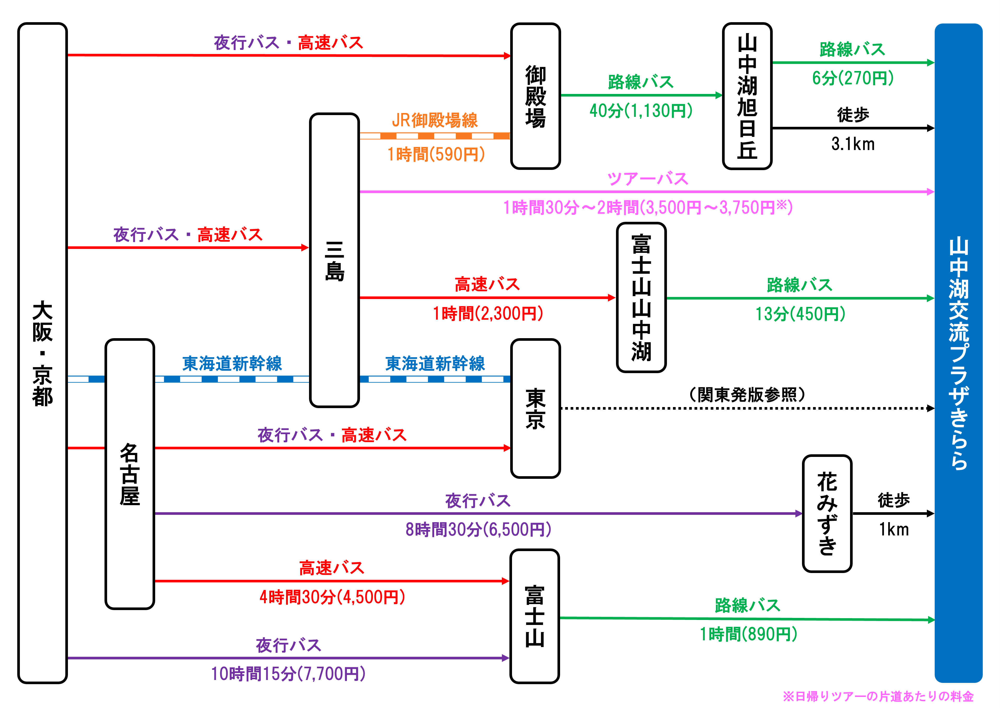
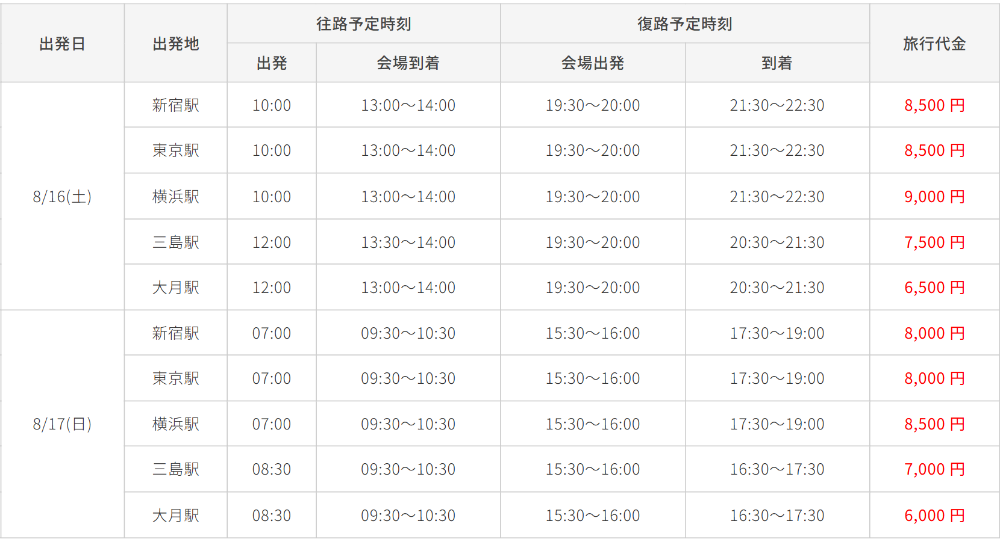

私立恵比寿中学（えびちゅう/エビ中）の夏の野外ライブ「ファミえん」が開催される「山中湖交流プラザきらら」に公共交通機関だけでアクセスする方法（時刻表・運賃・予約など）をまとめました。
【日時】
2025年8月16日(土)：14:00開場／15:30開演
2025年8月17日(日)：11:00開場／12:30開演
【会場】
山中湖交流プラザきらら シアターひびき
目次
アクセス図
関東発
(↓路線をクリックすると詳細説明に移動します)
関西発
(↓路線をクリックすると詳細説明に移動します)
🚍️ 高速バス
🚍️ 新宿⇔山中湖平野・旭日丘
富士急行バス1ヶ月前(7/16, 17)の朝4時
| （行き） | 運賃 | 旭日丘行 | 平野行 | 旭日丘行 | 平野行 | 平野行 | 平野行 | 旭日丘行 | 平野行 | 平野行 |
|---|---|---|---|---|---|---|---|---|---|---|
| バスタ新宿 | - | 7:15 | 7:45 | 8:15 | 8:25 | 8:55 | 9:15 | 10:15 | 10:45 | 11:15 |
| 山中湖旭日丘 | 2,300円 | 9:29 | 10:59 | 10:37 | 10:39 | 11:09 | 11:29 | 12:37 | 12:59 | 13:29 |
| 撫岳荘前 | 2,300円 | - | 10:04 | - | 10:44 | 11:14 | 11:34 | - | 13:04 | 13:34 |
| 山中湖平野 | 2,350円 | - | 10:09 | - | 10:49 | 11:19 | 11:39 | - | 13:09 | 13:39 |
| （帰り） | 運賃 | 新宿行 | 新宿行 | 新宿行 | 新宿行 | 新宿行 | 新宿行 | 新宿行 |
|---|---|---|---|---|---|---|---|---|
| 山中湖平野 | 2,350円 | 15:25 | - | - | 16:40 | 17:40 | - | - |
| 撫岳荘前 | 2,300円 | 15:28 | - | - | 16:43 | 17:43 | - | - |
| 山中湖旭日丘 | 2,300円 | 15:35 | 16:05 | 16:25 | 16:50 | 17:50 | 18:25 | 19:40 |
| バスタ新宿 | - | 17:55 | 18:25 | 18:55 | 19:10 | 20:10 | 20:55 | 22:00 |
| 山中湖旭日丘 | 撫岳荘前 | 山中湖平野 | |
|---|---|---|---|
| 会場入口まで | 3.1 km (経路) | 1.1 km (経路) | 1.2 km (経路) |
関東からならこの平野発着便が一番便利
1日目行きと2日目帰りの予約はすぐ埋まる
🚍️ 東京⇔富士山駅
富士急行バス1ヶ月1日前(7/15, 16)の朝10時
| （行き） | 運賃 | 河口湖行 | 河口湖行 | 河口湖行 | 河口湖行 | 河口湖行 | 河口湖行 | 河口湖行 | 河口湖行 |
|---|---|---|---|---|---|---|---|---|---|
| 東京駅八重洲南口 | - | 6:20 | 6:50 | 7:20 | 7:40 | 8:10 | 8:40 | 9:50 | 10:20 |
| 富士山駅 | 2,020円 | 8:22 | 8:47 | 9:17 | 9:42 | 10:07 | 10:37 | 12:07 | 12:17 |
| （帰り） | 運賃 | 東京行 | 東京行 | 東京行 | 東京行 | 東京行 |
|---|---|---|---|---|---|---|
| 富士山駅 | 2,020円 | 16:40 | 17:10 | 17:40 | 18:10 | 19:10 |
| 東京駅日本橋口 | - | 18:35 | 19:05 | 19:35 | 20:05 | 21:05 |
🚍️ 東京⇔山中湖旭日丘
富士急行バス1ヶ月1日前(7/15, 16)の朝10時
| （行き） | 運賃 | 旭日丘行 |
|---|---|---|
| 東京駅八重洲南口 | - | 9:20 |
| 山中湖旭日丘 | 2,390円 | 11:55 |
| （帰り） | 運賃 | 東京行 |
|---|---|---|
| 山中湖旭日丘 | 2,390円 | 15:20 |
| 東京駅日本橋口 | - | 17:57 |
| 山中湖旭日丘 | |
|---|---|
| 会場入口まで | 3.1 km (経路) |
（行き）乗換先のバスは12:46発
🚍️ 日吉→山中湖旭日丘
富士急行バス1ヶ月前(7/16, 17)の朝5時
| （行き） | 運賃 | 河口湖行 |
|---|---|---|
| 日吉駅 | - | 7:50 |
| センター北駅 | - | 8:20 |
| たまプラーザ駅 | - | 8:40 |
| 市が尾駅 | - | 9:00 |
| 山中湖旭日丘 | 1,950円 | 11:00 |
| 山中湖旭日丘 | |
|---|---|
| 会場入口まで | 3.1 km (経路) |
（行き）乗換先のバスは12:46発
🚍️ 横浜⇔富士山山中湖
富士急行バス1ヶ月前(7/16, 17)の朝5時
| （行き） | 運賃 | 河口湖行 |
|---|---|---|
| 横浜駅 | - | 7:30 |
| 富士山山中湖 | 2,300円 | 9:39 |
| （帰り） | 運賃 | 横浜行 |
|---|---|---|
| 富士山山中湖 | 2,300円 | 18:07 |
| 横浜駅 | - | 20:11 |
（行き）乗換先のバスは10:39発
🚍️ 三島⇔富士山山中湖
三島・河口湖ライナー31日前(7/16, 17)の朝9時
| （行き） | 運賃 | 河口湖行 | 河口湖行 | 河口湖行 | 河口湖行 | 河口湖行 | 河口湖行 |
|---|---|---|---|---|---|---|---|
| 三島駅南口 | - | 9:20 | 10:20 | 11:20 | 12:20 | 13:20 | 14:20 |
| 富士山山中湖 | 2,300円 | 10:25 | 11:25 | 12:25 | 13:25 | 14:25 | 15:25 |
| （帰り） | 運賃 | 三島行 | 三島行 |
|---|---|---|---|
| 富士山山中湖 | 2,300円 | 16:25 | 17:25 |
| 三島駅北口 | - | 17:30 | 18:30 |
🚍️ 名古屋→富士山駅
名鉄バス1ヶ月前(7/16, 17)の朝8時
| （行き） | 運賃 | 富士五湖行 |
|---|---|---|
| 名鉄バスセンター | 4,500円 | 7:50 |
| 富士山駅 | - | 12:20 |
🌙🚍️ 名古屋⇔花みずき
青木バス不明
| （行き） | 運賃 | 山中湖行 |
|---|---|---|
| 朝倉駅 | 6,500円 | 22:30 |
| 太田川駅 | 6,500円 | 22:45 |
| 名古屋栄 | 6,500円 | 23:40 |
| 名古屋駅 | 6,500円 | 24:00 |
| 花みずき | - | 8:30 |
| （帰り） | 運賃 | 名古屋行 |
|---|---|---|
| 花みずき | - | 20:20 |
| 名古屋栄 | 6,500円 | 5:10 |
| 名古屋駅 | 6,500円 | 5:25 |
| 太田川駅 | 6,500円 | 6:10 |
| 朝倉駅 | 6,500円 | 6:15 |
| 花みずき | |
|---|---|
| 会場入口まで | 1 km (経路) |
夏季のみ運行。1日目終演後でも山中湖から脱出可能
🌙🚍️ 大阪・京都⇔富士山駅
近鉄バス2ヶ月前(6/16, 17)の朝5時(?)
| （行き） | 運賃 | 河口湖行 | 運賃 | 河口湖行 |
|---|---|---|---|---|
| 天王寺駅 | 9,700円 | 21:35 | 7,700円 | 21:50 |
| 近鉄なんば駅西口 | 9,700円 | 21:55 | 7,700円 | 22:10 |
| 大阪駅前 | 9,700円 | 22:15 | 7,700円 | 22:30 |
| 京都駅八条口 | 9,200円 | 23:18 | 7,200円 | 23:33 |
| 富士山駅 | - | 8:30 | - | 8:45 |
| （帰り） | 運賃 | 大阪行 | 運賃 | 大阪行 |
|---|---|---|---|---|
| 富士山駅 | - | 20:44 | - | 20:44 |
| 京都駅八条口 | 9,200円 | 5:57 | 7,200円 | 5:57 |
| 大阪駅前 | 9,700円 | 6:53 | 7,700円 | 6:53 |
| 近鉄なんば駅西口 | 9,700円 | 7:13 | 7,700円 | 7:13 |
| 天王寺駅 | 9,700円 | 7:34 | 7,700円 | 7:34 |
🚌 路線バス
🚌 御殿場⇔山中湖旭日丘
富士急バスリアルタイム運行情報(行き)
リアルタイム運行情報(帰り)
| （行き） | 運賃(IC可) | 河口湖行 | 河口湖行 | 河口湖行 | 河口湖行 | 河口湖行 | 河口湖行 | 河口湖行 | 河口湖行 | 河口湖行 | 河口湖行 |
|---|---|---|---|---|---|---|---|---|---|---|---|
| JR御殿場駅 | - | 7:45 | 8:50 | 9:30 | 10:00 | 10:30 | 11:00 | 11:30 | 12:30 | 13:30 | 14:15 |
| 山中湖旭日丘 | 1,130円 | 8:22 | 9:27 | 10:07 | 10:37 | 11:07 | 11:37 | 12:07 | 13:07 | 14:07 | 14:57 |
| （帰り） | 運賃(IC可) | 御殿場行 | 御殿場行 | 御殿場行 | 御殿場行 | 御殿場行 | 御殿場行 |
|---|---|---|---|---|---|---|---|
| 山中湖旭日丘 | 1,130円 | 15:08 | 16:08 | 17:08 | 18:03 | 19:08 | 19:33 |
| JR御殿場駅 | - | 15:50 | 16:50 | 17:50 | 18:40 | 19:45 | 20:10 |
| 山中湖旭日丘 | |
|---|---|
| 会場入口まで | 3.1 km (経路) |
（帰り）終演時間次第で山中湖旭日丘まで歩けば1日目終演後でも山中湖から脱出可能
(2024年は18:50終演)
🚌 山中湖旭日丘⇔会場
ふじっ湖号リアルタイム運行情報(行き)
リアルタイム運行情報(帰り)
| （行き） | 運賃(IC可) | 平野行 | 平野行 | 平野行 | 平野行 |
|---|---|---|---|---|---|
| 山中湖旭日丘 | - | 8:45 | 10:45 | 12:45 | 14:45 |
| 三国山ハイキングコース入口 | 270円 | 8:51 | 10:51 | 12:51 | 14:51 |
| 山中湖交流プラザ | 270円 | 8:52 | 10:52 | 12:52 | 14:52 |
| （帰り） | 運賃(IC可) | 河口湖行 |
|---|---|---|
| 山中湖交流プラザ | 270円 | 16:08 |
| 三国山ハイキングコース入口 | 270円 | 16:09 |
| 山中湖旭日丘 | - | 16:15 |
| 山中湖旭日丘 | 三国山ハイキングコース入口 | 山中湖交流プラザ | |
|---|---|---|---|
| 会場入口まで | 3.1 km (経路) | 350 m (経路) | 350 m (経路) |
（行き）遅延しやすい
（帰り）会場付近は渋滞するので山中湖旭日丘まで徒歩推奨
🚌 富士山山中湖⇔会場
ふじっ湖号リアルタイム運行情報(行き)
リアルタイム運行情報(帰り)
| （行き） | 運賃(IC可) | (F2)平野行 | (F1)平野行 | (F2)平野行 | (F1)平野行 | (F2)平野行 | (F1)平野行 |
|---|---|---|---|---|---|---|---|
| 富士山山中湖 | - | 10:39 | 11:39 | 12:39 | 13:39 | 14:25 | 15:39 |
| 三国山ハイキングコース入口 | 450円 | 10:52 | - | 12:52 | - | 14:52 | - |
| 山中湖交流プラザ | 450円 | 10:53 | - | 12:53 | - | 14:53 | - |
| 山中湖平野 | 480円 | - | 11:50 | - | 13:50 | - | 15:50 |
| 山中湖交流プラザ | 480円 | - | 12:08 | - | 14:08 | - | 16:08 |
| （帰り） | 運賃(IC可) | (F2)河口湖行 | (F1)河口湖行 | (F2)河口湖行 | (F1)河口湖行 |
|---|---|---|---|---|---|
| 山中湖交流プラザ | 480円 | 14:53 | - | 16:53 | - |
| 山中湖平野 | 480円 | 15:12 | 16:06 | 17:12 | 18:36 |
| 山中湖交流プラザ | 450円 | - | 16:09 | - | 18:39 |
| 三国山ハイキングコース入口 | 450円 | - | 16:10 | - | 18:40 |
| 富士山山中湖 | - | 15:23 | 16:23 | 17:23 | 18:53 |
| 三国山ハイキングコース入口 | 山中湖交流プラザ | 山中湖平野 | |
|---|---|---|---|
| 会場入口まで | 350 m (経路) | 350 m (経路) | 1.2 km (経路) |
（行き）F1(右回り)の場合は山中湖平野で降りて徒歩が早い
（帰り）山中湖交流プラザでバスを逃しても山中湖平野まで歩けば間に合う場合あり
🚌 富士山駅⇔会場
ふじっ湖号リアルタイム運行情報(行き)
リアルタイム運行情報(帰り)
| （行き） | 運賃(IC可) | (F2)平野行 | (F1)平野行 | (F2)平野行 | (F1)平野行 | (F2)平野行 | (F1)平野行 | (F2)平野行 | (F1)平野行 |
|---|---|---|---|---|---|---|---|---|---|
| 富士山駅 | - | 7:53 | 8:53 | 9:53 | 10:53 | 11:53 | 12:53 | 13:53 | 14:53 |
| 三国山ハイキングコース入口 | 890円 | 8:52 | - | 10:52 | - | 12:52 | - | 14:52 | - |
| 山中湖交流プラザ | 890円 | 8:53 | - | 10:53 | - | 12:53 | - | 14:53 | - |
| 山中湖平野 | 910円 | 8:56 | 9:50 | 10:56 | 11:50 | 12:56 | 13:50 | 14:56 | 15:50 |
| 山中湖交流プラザ | 910円 | - | 10:08 | - | 12:08 | - | 14:08 | - | 16:08 |
| （帰り） | 運賃(IC可) | (F2)河口湖行 | (F1)河口湖行 | (F2)河口湖行 | (F1)河口湖行 | (A2)河口湖行 |
|---|---|---|---|---|---|---|
| 山中湖交流プラザ | 910円 | 14:53 | - | 16:53 | - | - |
| 山中湖平野 | 910円 | 15:12 | 16:06 | 17:12 | 18:36 | - |
| 山中湖交流プラザ | 890円 | - | 16:09 | - | 18:39 | - |
| 三国山ハイキングコース入口 | 890円 | - | 16:10 | - | 18:40 | - |
| 山中湖旭日丘 | 740円 | - | - | - | - | 19:42 |
| 富士山駅 | - | 16:04 | 17:04 | 18:04 | 19:34 | 20:07 |
| 三国山ハイキングコース入口 | 山中湖交流プラザ | 山中湖平野 | 山中湖旭日丘 | |
|---|---|---|---|---|
| 会場入口まで | 350 m (経路) | 350 m (経路) | 1.2 km (経路) | 3.1 km (経路) |
（行き）F1(右回り)の場合は山中湖平野で降りて徒歩が早い
（帰り）山中湖交流プラザでバスを逃しても山中湖平野まで歩けば間に合う場合あり
（帰り）終演時間次第で山中湖旭日丘まで歩けば1日目終演後でも山中湖から脱出可能(新宿にも帰れる)
(2024年は18:50終演)
🚅 新幹線
🚅 新大阪・名古屋⇔三島(東海道新幹線)
（指定席）1ヶ月前(7/16, 17)の朝10時から
（のぞみを使わない場合↓）
| 新大阪→三島 | 名古屋→三島 | |
|---|---|---|
| 運賃+料金 | 11,770円 | 7,910円 |
| 所要時間 | 2時間10分～ | 1時間10分～ |
| （行き） | こだま 700号 |
ひかり 640号 |
こだま 708号 |
ひかり 670号 |
こだま 716号 |
ひかり 506号 |
|---|---|---|---|---|---|---|
| 新大阪 | - | 7:36 | 7:54 | 9:48 | 9:54 | 11:48 |
| 名古屋 | 6:45 | 8:43 | 9:08 | 10:43 | 11:08 | 12:43 |
| 三島 | 8:31 | 9:57 | 10:49 | 11:57 | 12:49 | 13:57 |
| 新大阪(のぞみ無) | 新大阪(のぞみ有) | 名古屋 | |
|---|---|---|---|
| 三島駅の終電 | 19:46 | 20:54 | 22:15 |
お盆期間(8月8日(金)～8月17日(日))「のぞみ」は全車指定席
🚃 その他の鉄道
🚃 新宿⇔大月・富士山(JR中央本線・富士急)
| 新宿→大月(最速) | 新宿→大月(最安) | 新宿→富士山(最速) | 新宿→富士山(最安) | |
|---|---|---|---|---|
| 運賃+料金 | 2,360円 | 1,000円 | 4,000円 | 2,040円 |
| 所要時間 | 1時間 | 1時間30分～ | 1時間50分 | 2時間30分～ |
| 新宿 | |
|---|---|
| 富士山駅の終電 | 21:21 |
| 大月駅の終電 | 22:24 |
新宿→山中湖平野の高速バスのほうがお得＆楽
ただ渋滞で遅れる心配はない
大月で宿をとって大月からの日帰りツアーバスを使う人も
🚃 三島⇔御殿場(JR御殿場線)
| 三島⇔御殿場 | |
|---|---|
| 運賃 | 590円 |
| 所要時間 | 1時間 |
| 新大阪 | 名古屋 | |
|---|---|---|
| 御殿場駅の終電 | 20:00 | 20:56 |
1時間に2本
(参考) 公式バスツアー
バスツアー公式サイト日帰り
1泊2日
例年FC先行の当落発表と同時にツアーバスの詳細発表＆先着受付開始
特に新宿発・東京発は数時間で完売する
片道の当日券販売がある(残席分のみ)